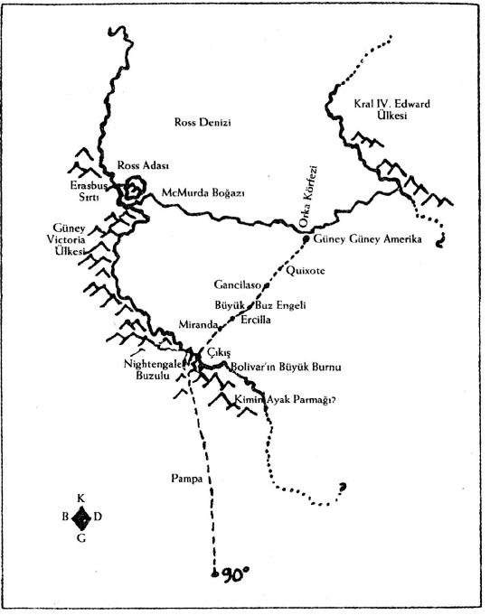

20
Güney
YELCHO'NUN ANTARKTİKA SEFERİNİN ÖZET BİR RAPORU
1909-1910
Bu raporu yayımlatmak gibi bir niyetim olmasa da, torunlarımdan ya da başka birisinin torunlarından biri bir gün bunu bulursa hoş olur diye düşünüyorum; bu yüzden, onu tavan arasında, deri kaplı sandıkta, Rosita'nın vaftiz günü giysisi, Juanito'nun gümüş çıngırağı, benim gelinlik ayakkabılarım ve geyik derisi botlarımla birlikte saklayacağım.

Çatı Katındaki Harita
Bir keşif seferi düzenlemenin ilk şartı —para— normalde en zor gerçekleşendir. Yazgısı Lima'nın çok sessiz bir banliyösünde bir evin tavan arasında bir sandıkta kalmak olan bir raporda bile eli açık velinimetimizin, alicenap cömertliği olmasaydı Yelcho Seferinin gündüz düşlerinde aylak gezintilerden öteye gidemeyeceği o yüce ruhun adını yazamıyor olmam beni üzüyor. En iyi ve en modern donanıma, zengin ve kaliteli erzaka sahip olmamız; Şili Hükümeti'nin bir gemisinin cesur subayları ve yürekli mürettebatı ile birlikte, bizim rahatlığımız için, dünya çevresinin yarısı kadar bir yola gönderilmesi; bütün bunlar, adını, heyhat, söylememem gereken ama hayatım boyunca kendisine müteşekkir olacağım bu velinimet sayesinde.
Bir çocuktan birazcık büyükken, Tierra del Fuego'dan güneye doğru yol alırken Bellingshausen Denizi'nde etrafı buzlarla çevrilen ve tam bir yıl boyunca, yüzen buz tabakalarıyla birlikte sürüklenen Belgica'nın seyahati, gemideki insanların yiyeceksizlik ve sonsuz kış karanlığının dehşetinden çektikleri hayal gücümü harekete geçirmişti. O geminin öyküsünü tekrar tekrar okudum, sonra da Güney Shetland Adaları'ndan Dr. Nordenskjold'un Uruguay gemisinin atılgan kaptanı İrizar tarafından kurtarılmasına dair haberleri ve Weddell Denizi'nde Scotia'nın maceralarını heyecanla takip ettim. Ama bütün bu serüvenler benim için, Discovery'le gerçekleştirilen 1902-1904 Britanya Ulusal Antarktika Seferi'nin ve bu seferin Kaptan Scott tarafından anlatılan olağanüstü öyküsünün öncülleriydi sadece. Londra'dan sipariş ettiğim ve defalarca okuduğum bu kitap, haritalarımızda ve kürelerimizde bir beyaz bulut, bir boşluk gibi uzanan, orada burada salkım saçak sahil şeridi parçaları, bilinmez mağaralar, farazi adalar, orada olduğu veya olmadığı bile belli olmayan burunlar ile dolu o garip kıtayı, Güneydeki son Thule'yi, Antarktika'yı kendi gözlerimle görme özlemiyle doldurdu beni. Ve bu arzu kutup buzları kadar saftı: gitmek, görmek; ne fazla ne eksik. Kaptan Scott'un keşif gezisinin bilimsel başarılarına saygım sonsuz ve fizikçilerin, meteorologların, biyologların ve sair bilim adamlarının bulgularını tutkulu bir ilgiyle okudum; ama ne herhangi bir bilim dalında eğitimim ne de böyle bir eğitim için fırsatım olmadığından, cehaletim Antarktika ile ilgili bilimsel bilgilere katkıda bulunma düşüncesini bir kenara bırakmaya zorladı beni. Bu, keşif gezimin tüm üyeleri için de geçerli. Üzücü, ama elimizden gelen bir şey yok bu konuda. Bizim amacımız gözlem ve keşifle sınırlıydı. Belki biraz daha uzağa gitmeyi umuyorduk ve biraz daha fazlasını görmeyi; ama bu olmasa bile gitmek ve görmek yeterdi. Basit bir hırs, bence ve özünde mütevazı bir hırs.
Yine de sevgili kuzenim ve dostum Juana — —'nın destek ve teşvikleri olmasaydı, bir hırstan, bir özlemden öteye gidemezdi bu. (Bu raporun yabancıların eline geçmesi ve hiçbir şeyden şüphelenmeyen kocaların, oğulların ve diğerlerinin mahcubiyet ya da nahoş bir şöhretle karşı karşıya kalmaması için soyadlarını kullanmıyorum.) Discovery'nin Seyahati kitabımı Juana'ya ödünç vermiştim ve 1908'in bir Pazar günü Ayin'den sonra Plaza de Armas'da şemsiyelerimizin altında gezinirken, "Eee, Kaptan Scott yapabiliyorsa biz neden yapamayalım?" diyen oydu.
Valparaiso'daki Carlota —'ya yazmamızı öneren de Juana'ydı. Carlota aracılığıyla velinimetimizle tanıştık ve böylece paramızı, gemimizi ve hatta bazılarımızın kullanmak zorunda olduğu, bir Bolivya manastırında inzivaya çekilme gibi inandırıcı bir mazeret bulduk (diğerleri ise kış sezonu için Paris'e gittiğini söyledi). Ve en karanlık anlarda sebatkâr olmayı sürdüren, amacımıza ulaşma kararlılığını asla yitirmeyen, benim Juana'mdı.
Karanlık anlar da vardı gerçekten; özellikle de 1909'un ilk aylarında, Keşif Gezisi'nin nasıl olup da israf edilip ömür boyu üzüntü kaynağı olan çeyrek ton meyveli pemmikan pastırmasından öte bir şey olabileceğini görmediğim zamanlar. Sefer gücümüzü bir araya getirmek o kadar zordu ki! Sorduğumuz kişiler arasında, neden bahsettiğimizi anlayan ne denli azsa, delirmiş, kötü niyetli ya da her ikisi birden olduğumuzu düşünen o denli çoktu! Ve deliliğimizi paylaşan o birkaç kişi arasında, zamanı geldiğinde, gündelik görevlerini bir kenara bırakıp, hiç de az olmayan belirsizlik ve tehlike ile girişilen, en az altı ay sürecek bir seyahatte yer almayı amaç edinebilen daha da azdı. Hasta bir anne ya da baba; kendini işine vermiş endişeli bir koca; evde kendisiyle birlikte sadece ona bakacak cahil ya da beceriksiz hizmetçiler bulunan bir çocuk: bunlar kolayca bir kenara bırakılabilecek sorumluluklar değil. Ve bu görevlerden kaçmak isteyenler de, yani zorluk, tehlike ve yoksunluk içinde olanlar da, isteyeceğimiz yol arkadaşları değildi.
Ama çabalarımız başarıyla taçlandığına göre, neden zorluklar ve gecikmeler ya da hepimizin başvurmak zorunda kaldığı aşağılık kumpaslar ve düpedüz yalanlar üzerinde duralım ki? Bizimle gelmek isteyen ama şöyle ya da böyle özgür olamayan, ardımızda, tehlike, belirsizlik, umutsuzluk dolu bir hayat içinde bırakmak zorunda kaldığımız o arkadaşlarımızı sadece üzüntüyle anımsıyorum.
1909 yılının 17 Ağustos'unda, Punta Arenas, Şili'de Keşif Seferi'nin tüm üyeleri ilk kez bir araya geldi: İki Perulu, Juana ve ben; Arjantin'den Zoe, Berta, Teresa ve Şilililerimiz Carlota ile arkadaşları Eva, Pepita ve Dolores. Son anda, Maria'nın Quito'daki kocasının hastalandığını ve ona bakması gerektiğini, gelemeyeceğini haber aldım; böylece dokuz kişi kaldık. Aslında, sadece sekiz kişi kalmayı da kabullenmiştik; ama Magellan Boğazı'na girdiği anda yelkenlisi su almaya başlayan, yılgınlık nedir bilmeyen Zoe, Kızılderililerin sürdüğü küçük, ağaçtan oyma bir Kızılderili kayığıyla, gece nasıl aniden bastırırsa öyle çıkageldi.
O gece, yola çıkmadan önce birbirimizi tanımaya başladık. Ve Punta Arenas'ta berbat bir liman hanında berbat akşam yemeğimizi yerken tek bir kişinin sözüne sorgusuz sualsiz itaat etmeyi gerektiren acil bir tehlike doğarsa, o kişinin ilk ben olacağımı kararlaştırdık. Ben bunu yapamayacak durumdaysam, Carlota üstlenecekti bu görevi; o da yapamazsa Berta. Bunun üzerine, üçümüz kahkahalar ve tezahüratlar arasında "Ulu İnka", "La Araucana" ve "Üçüncü Zabit" olarak şerefe kadeh kaldırdık. Neyse ki ve iyi ki "liderlik" vasıflarımın sınanmasına hiç gerek olmadı, dokuzumuz birden, kimsenin kimseye emir vermesine gerek kalmadan, her şeyi başından sonuna kadar hep beraber yürüttük. Sadece iki ya da üç kez, sözlü olarak veya el kaldırmak suretiyle oy verme yöntemine başvurmamız gerekti. Elbette, bolca tartıştık. Ama, tartışacak zamanımız vardı. Ve şöyle ya da böyle, tartışmalar her zaman bir kararla sonuçlanıyor ve ona göre eyleme geçilmesi gerekiyordu. Genellikle en az bir kişi, alınan karar hakkında homurdanıyordu, hatta bazen sertçe. Ama homurdanmadan ve arada bir "Ben demiştim" deme fırsatı olmadan hayat nedir ki? Antarktika'da kızak çekmek şöyle dursun, ev işlerine veya bebek bakımına homurdanmadan nasıl katlanılır? Yelcho'da gördüğümüz kadarıyla, subayların homurdanması yasak; ama biz hepimiz, hem doğuştan hem aldığımız terbiye gereği, kesin ve geri dönülmez biçimde, subay değil tayfaydık.
Güney kıtasına en kısa yol, gemimizin kaptanının da başta bize dediği gibi, Güney Shetland Adaları ve Bellingshausen Denizi ya da Güney Orkneyler üzerinden Weddell Denizi olmasına rağmen, biz batıya, Kaptan Scott'un gittiği ve tarif ettiği ve cesur Ernest Shackleton'un daha ancak geçen sonbahar döndüğü Ross Denizi'ne gitmeyi planladık. Bu bölge hakkında Antarktika kıyılarının diğer kısımlarından daha fazla şey biliniyordu ve bilgi öyle ahım şahım olmasa da riske atma hakkımız olmadığını düşündüğümüz gemi güvenliği için bir sigorta gibiydi. Kaptan Pardo haritaları ve planladığımız güzergâhı inceledikten sonra bizim dediğimizi aynen kabul etti ve böylece, ertesi sabah Boğaz'dan batıya doğru yola koyulduk.
Yerkürenin çevresinin yarısı kadar yol katedeceğimiz yolculuğumuzda talih de bizimleydi. Küçük Yelcho dünyanın çevresini kesintisiz saran Güney Okyanusunun denizlerinde, sert rüzgârlar ve denizin parıltıları arasından geçerek, bir aşağı bir yukarı neşeyle yol alıyordu. Ailesine ait estancia'da boğalarla ve çok daha tehlikeli ineklerle boğuşmuş olan Juana gemiye "la vaca valiente" adını vermişti; çünkü sürekli yeniden hücuma geçiyordu. Deniz tutmasından kurtulunca, hepimiz deniz yolculuğundan keyif almaya başladık; gene de zaman zaman, biz kullanalım diye son derece centilmen bir davranışla boşalttıkları üç küçük kamarada ancak birbirimize sokulmuş haldeyken "güvende" olduğumuzu düşünen kaptan ve zabitlerinin kibar ama işgüzar koruyuculuğunun baskısını hissediyorduk.
İlk buzdağımızı aradığımızdan çok daha güneyde gördük ve onu akşam yemeğinde bir Veuve Clicquot ile selamladık. Ertesi gün yüzer buz alanına, kara buzlarından ve Antarktika'nın kışları donan denizlerinden kopup ilkbaharda kuzeye doğru sürüklenen, yüzer buz tabakaları ve dağları bölgesine girdik. Talih hâlâ gülümsüyordu bize: Takviyesiz metal gövdesiyle buzun arasında kendisine yol açamayan küçük buharlı gemimiz birinden diğerine geçerek hiç duraksamadan yolunu buldu ve üçüncü gün, gemilerin bazen haftalarca çabaladığı ve sonunda geri dönmek zorunda kaldığı yüzer buz alanını geçmiştik. Artık önümüzde Ross Denizinin koyu gri suları ve onun ötesinde, ufukta, uzakta ışıldayan, Büyük Buz Engeli'nin bulutları yansıtan beyazlığı uzanıyordu.
160° Batı Boylamı'nın biraz doğusunda Ross Denizine girerken, Kaptan Scott'un grubunun dev buz duvarında küçük bir girinti bularak kıyıya çıktığı ve gerek keşif gerek fotoğraflama için hidrojen gaz balonlarını gönderdiği yerde Engel'i gördük. Engel'in kule gibi yükselen cephesi, dimdik yarları, suların aşındırdığı mavi ve mor mağaraları; hepsi de anlatıldığı gibiydi ama yer değişmişti: Dar bir girinti yerine, o parlak güney ilkbaharının güneş ışığında oyun oynayan ve su fışkırtan güzel ve müthiş orka balinaları ile dolu büyükçe bir koy vardı.
Anlaşılan 1902'de Discovery'nin geçişinden beri (en azından büyük kısmı, kara üzerinde durmayıp suda yüzen) Engel'den bir hayli buz kütlesi kopmuştu. Bu durum Engel'in üstünde kamp kurma planımızı yeniden gözden geçirmemize neden oldu ve alternatifleri tartışırken, Kaptan Pardo'dan gemiyi Engel boyunca batıya, Ross Adası ve McMurdo Boğazına doğru götürmesini istedik. Deniz buzsuz ve oldukça sakin olduğundan, bunu seve seve kabul etti ve Erebus Dağı'nın o dumanlı zirvesini görünce, bunu gene yarım kasa Veuve Clicquot ile kutladık.
Yelcho Arrival Körfezi'nde demir attı ve geminin filikasıyla karaya çıktık. Toprağa, o toprağa, uzun volkanik yamacın eteğindeki o çorak, soğuk taşlara adım attığımda neler hissettiğimi anlatabilmem imkânsız. Sevinç, sabırsızlık, şükran, huşu, aşinalık. Nihayet evime geldiğimi hissettim. Sekiz Adelie pengueni hemen gelip bizi, pek tasvip etmeseler de, nidalarıyla selamladı. "Nerelerdeydiniz? Neden bu kadar geç kaldınız? Kulübe bu yönde. Lütfen böyle buyurun. Aman, kayalara dikkat!" Kaptan Scott'un grubu tarafından inşa edilen büyük yapının, aynen kitabındaki fotoğraf ve çizimlerde olduğu gibi durduğu Kulübe Ucu Noktasını görmeye gitmemizde ısrar ettiler. Ne var ki etrafındaki alan tiksindiriciydi: fok derileri, fok kemikleri, penguen derileri, çöp ve hepsinin tepesinde de bağrışan, çılgın, yırtıcı kutup martıları. Refakatçilerimiz mezbaha boyunca, huzursuz bir dinginlik içinde paytak paytak yürüdü ve içlerinden biri şahsen, pek içeri girmek istemesem de, bana kapıyı gösterdi.
Kulübenin içi daha az rahatsız edici ama çok kasvetliydi. Bir tür oda içinde odaya erzak kutuları istiflenmişti; Discovery grubunun uzun kış gecelerinde melodramlarını ve romantik gösterilerini sahnelediği yer olarak tahayyül ettiğim gibi görünmüyordu. (Bizden sadece bir yıl önce oraya giden Sir Ernest'in burayı büyük ölçüde yeniden düzenlediğini çok sonraları öğrendim.) Pisti ve tam bir düzensizlik hâkimdi. Teneke bir çay kutusu açık duruyordu. Etrafta boş, et konservesi kutuları vardı; yere bisküviler saçılmıştı; ayaklarımızın altı köpek pislikleriyle doluydu ve donmuştu elbette; ama bu da durumu pek iyileştirmiyordu. Belli ki buranın son sakinleri aceleyle gitmek zorunda kalmıştı, belki de bir tipi anında. Yine de çay kutusunu kapatabilirlerdi. Ama ev temizliği, sonsuzun sanatı, amatörlere göre bir oyun değildir.
Teresa kulübeyi kampımız olarak kullanmamızı teklif etti. Zoe buna karşı çıktı ve orayı yakmamızı önerdi. Sonunda kapıyı kapattık ve orasını bulduğumuz gibi bıraktık. Penguenler onaylar gibiydi; filikaya gidene kadar yol boyu bize tezahürat yaptılar.
McMurdo Boğazında buz yoktu ve Kaptan Pardo bizi Ross Adasından çıkartıp Batı Dağları'nın eteğinde, kuru ve sağlam toprakta kamp kurabileceğimiz Victoria Ülkesi tarafına götürmeyi önerdi. Ama o dağlar, fırtınanın kararttığı zirveleri, asılı buzyalakları ve buzulları ile, Kaptan Scott'un batı seyahatinde bulduğu kadar korkunç görünüyordu ve hiçbirimiz onlar arasında bir sığınak aramaya pek istekli değildik.
O gece, gemide, geri dönmeye ve üssümüzü, ilk başta planladığımız gibi, Engel üstünde kurmaya karar verdik. Çünkü eldeki tüm raporlar güneye giden açık yolun, Engel yüzeyi boyunca ilerleyip bitişik buzullardan biri üzerinden kıtanın tüm iç kısmını oluşturuyor görünen yüksek platoya tırmanmak olduğunu gösteriyordu. Kaptan Pardo buna şiddetle karşı çıktı ve üzerinde durduğumuz buz parçası Engel'den kopup kuzeye doğru sürüklenmeye başlarsa bize ne olacağını sordu. "Eh" dedi Zoe, "o zaman bizimle buluşmak için o kadar yol gelmeniz gerekmez." Ama Kaptan bu konuda son derece ikna ediciydi ve kamp yaptığımızda, bir kaçış aracı olarak, Yelcho'nun filikalarından birini bizimle bırakma konusunda kendini ikna etti. Daha sonra, bunun balık tutmaya yaradığını fark ettik.
Antarktika toprağı üzerindeki ilk adımlarım, Ross Adası'na yegâne ziyaretim katıksız hazdan ibaret değildi. İngiliz şairin şu dizeleri takılmıştı aklıma:
Her görünüm hoş,
Ama sadece İnsan kötü.
Ama zaten kahramanlığın arka tarafı çoğu zaman üzücüdür; kadınlar ve hizmetçiler bilir bunu. Kahramanlığın bu nedenle eksilmediğini de bilirler. Ama elde edilenler erkeklerin sandığından daha küçüktür. Büyük otan gökyüzüdür, yeryüzüdür, denizdir, ruhtur. O akşam gemi tekrar doğuya doğru yol alırken dönüp baktım. Eylül ayına girmiştik ve on saat veya biraz daha fazla gün ışığı vardı. İlkbaharın günbatımı Erebus'un on iki bin fitlik zirvesinde asılı duruyor ve onun uzun, buharlı bacası üzerinde ışıyordu. Bizim kendi küçük bacamızdan çıkan buhar, biz yükseklere uzanan soluk buz duvarının altında tırmanırken, sisli sular üzerinde mavi renk atarak kayboluyordu.
"Orka Körfezi'ne —yıllar sonra, orasının Sir Ernest tarafından Balina Körfezi olarak adlandırıldığını öğrendik— dönerken, Engel'in kenarının gemiden kolay çıkışa imkân verecek kadar alçak olduğu bir korumalı kuytu yer bulduk. Yelcho buz demirini attı ve onu izleyen uzun, zorlu günleri erzakımızı indirerek ve orada, kenardan yarım kilometre ötede buz üzerinde kampımızı kurarak geçirdik.— Yelcho'nun mürettebatı da bize çok değerli yardımlarda ve sonsuz tavsiyelerde bulundu. Tüm yardımları şükranla, tavsiyelerin çoğunu ise biraz ihtiyatta kabul ettik.
Hava o zamana kadar bu enlemde ilkbahar için olağanüstü ılımandı; sıcaklık henüz -20° Fahrenhayt altına inmemişti ve kampımızı kurarken sadece bir kez tipi oldu. Öte yandan, Kaptan Scott, Engel'deki sert güney rüzgârlarından ısrarla bahsetmişti ve biz de ona göre planımızı yapmıştık. Kampımız her türlü rüzgâra maruz kalabileceğinden, yerin üzerinde esnek olmayan yapılar kurmaktan kaçındık. Korunmak için çadırlar kurarken bir yandan buzun içine, saman ve çam ağacından tahtalarla yalıtılmış bir dizi odacık kazdık ve üst kısımları bambu sırıklara çadır bezi gererek örtüp, üstünü de ağırlık ve yalıtım maksadıyla karla kapladık. Merkezdeki büyük odaya Arjantinlilerimiz anında Buenos Aires adını verdi; çünkü onlar için, nerede olurlarsa olsunlar merkez daima Buenos Aires'tir. Isınma ve pişirme ocağı Buenos Aires'teydi; depo tünelleri ve (Punta Arenas adı verilen) tuvalet ocaktan bir miktar ısı alıyordu. Uyuma odacıkları Buenos Aires'e açılıyordu ve çok küçüktüler; ayaklarınız önde, sürünerek girilebilen tüplerden ibarettiler. Alta saman döşenmişti ve kısa sürede vücut ısınızla ısınıyorlardı. Denizciler bunlara "tabut" ve "solucan deliği" adını veriyor ve buz içindeki tünellerimize dehşetle bakıyorlardı. Ama küçük tavşan yuvalarımız ya da köstebek köyümüz çok işimize yaradı; o koşullarda makul olarak beklenebilecek sıcaklığı ve mahremiyeti sağladı bize. Yelcho Şubat ayında buzu geçemeseydi ve kışı Antarktika'da geçirmek zorunda kalsaydık, çok sınırlı erzak kullanarak da olsa bunu kesinlikle yapabilirdik. Yaz gelmekte olduğundan, üssümüz —Sudamerica del Sur, Güney Güney Amerika; ama ona genellikle Üs diyorduk— sadece uyumak, erzakımızı saklamak ve bizi tipilerden korumak için kullanılacaktı.
Ama Berta ve Eva için, bundan öte bir şeydi. Üssün baş mimar-tasarımcıları, en hünerli yapıcı-kazıcıları ve gayretkeş ve hoşnut sakinleri onlardı; sürekli olarak, havalandırmada yeni bir yöntem icat ediyor, çatı penceresi yapmanın,bir yolunu buluyor ya da buz içinde anında kazarak, odalarımıza nasıl yeni eklemeler yapılacağını bize gösteriyorlardı. Onların sayesinde depolarımız son derece kullanışlı biçimde istiflenmişti, ocağımız son derece verimli bir şekilde çalışıyor ve ısıtıyordu. Dokuz kişinin yemek pişirdiği, yediği, çalıştığı, sohbet ettiği, tartıştığı, homurdandığı, resim yaptığı, gitar ve banjo çaldığı ve Sefer'in kitap ve haritalarını içeren kitapların bulunduğu Buenos Aires bir rahatlık ve kullanışlılık harikasıydı. Gerçek anlamda bir dostluk ortamında yaşıyorduk. Bir süre yalnız kalmak istediğinizde ise uyuma deliğinize başınız önde sürünerek gitmeniz yetiyordu.
Berta biraz daha ileri gitti. Güney Güney Amerika'yı yaşanabilir kılmak için elinden geleni yaptıktan sonra, buz yüzeyi altında bir hücre daha kazdı, sera çatısını andıran, neredeyse saydam bir buz katmanı bıraktı ve orada, tek başına heykeller üzerinde çalıştı. Son derece güzeldi şekilleri onların. Bazıları yere uzanmış insan figürleri ile Weddell foklarının zarif kıvrım ve hacimlerinin karışımı gibiydi, diğerleri ise buz saçakları ve buz mağaraları gibi fantastik şekillerdi. Belki de hâlâ oradır onlar, karın altında, Büyük Engel'in kabarcığı içinde. Onları yaptığı yerde taş kadar uzun dayanabilirler. Ama onları kuzeye getiremezdi. Su içinde yontmanın bedeli bu.
Kaptan Pardo bizi bırakmaya istekli değildi ama ona verilen emirler belirsiz bir süre Ross Denizi etrafında takılmasına izin vermiyordu; bu yüzden, sonunda, bu iyi adam yerimizden kımıldamamız, seyahat etmememiz, tehlikeye atılmamamız, soğuk ısırmasından korunmamız, keskin aletler kullanmamamız, buzdaki çatlaklara dikkat etmemiz yönünde bir sürü ciddi tembihte bulunarak ve 20 Şubat'ta ya da rüzgâr ve buzun izin vereceği yakın bir tarihte Orka Körfezi'ne dönme sözü vererek bizimle vedalaştı, tayfaları ise demir alırken neşeyle selamladılar bizi. O akşam, Ekim ayının uzun, turuncu alacakaranlığında, Yelcho'nun gabya çubuğunun, kuzey ufku, dünyanın kenarı üzerinden giderek bizi buz, sessizlik ve Kutup ile baş başa bıraktığını gördük.
O gece Güney Seyahatini planlamaya başladık.
Onu izleyen ay, kısa uygulama gezileri ve depo yerleştirmeyle geçti. Evlerimizde sürdürdüğümüz hayat kendi ölçülerinde zorlayıcı olsa da, donma noktasının on veya yirmi derece altında kızak çekmenin zorlayıcılığına hazırlamamıştı bizi. Uzun bir kızak yolculuğunu göze almadan önce hepimizin olabildiğince alıştırma yapması gerekiyordu.
Benim en uzun keşif gezim, Dolores ve Carlota ile birlikte, güneybatıya, Markham Dağı'na doğru oldu ve tam bir karabasandı: Yol boyunca tipi ve basınçlı buzla, derin buz yarıklarıyla uğraştık; oraya vardığımızda dağı göremedik ve dönüşte de karlı hava ve kar sırtları vardı. Ama yine de gezi yararlı oldu, bu sayede kapasitemizi hesaplamaya başlayabildik: Bu geziye çok ağır erzak yüküyle başlamıştık; bunları Üssün 100 ila 130 mil güney-güneybatısında depoladık. Ondan sonra, diğer gruplar daha da ileriyi, 83° 43' Enlemi'nde kar kurganları ve depolardan bir hat oluşana kadar zorladılar. Orada Juana ve Zoe, bir keşif gezisi sırasında, büyük bir buzulda, güneye açılan bir tür taş geçit buldu. Bu depoları, mümkünse, Kaptan Scott'un Güney Grubu'nun başına bela olan açlıktan, onu takip eden zorluklardan ve güç kaybından korunmak için kurduk. Ayrıca, bizim en az Kaptan Scott'un Husky'leri kadar iyi kızak çekebildiğimizi de memnuniyetle —büyük memnuniyetle— anlamış olduk. Elbette onun adamları kadar çok ya da hızlı çekmeyi umamazdık. Bunu yapabildiysek Kaptan Scott'un grubunun Engel'de karşılaştığından çok daha elverişli hava şartları sayesindedir; aynı zamanda, yiyeceklerimizin miktarı ve niteliği de kayda değer fark yarattı. Pemmikan pastırmamızda bulunan yüzde on beş oranındaki kurutulmuş meyvenin skorbiti önlediğinden eminim. And Kızılderililerinin geleneksel yöntemiyle dondurulmuş ve kurutulmuş patatesler de çok besleyici ama aynı zamanda çok hafifti ve az yer tutuyordu; kızakla taşınan erzak için mükemmeldi. Her durumda, yapabileceklerimiz konusunda ciddi bir güven duygusuyla, Güney Seyahati için hazırdık.
Güney Grubu iki kızak ekibinden oluşuyordu: Juana, Dolores ve ben; Carlota, Pepita ve Zoe. Berta, Eva ve Teresa'dan oluşan destek ekibi bizden önce ağır bir erzak yüküyle yola çıktı ve doğruca buzula, hedeflediğimiz güzergâhlara gidip dönüş yolculuğumuz için erzak depoları yerleştirdi. Onları beş gün geriden izledik ve dönüşte Ercilla Deposu ile Miranda Deposu arasında (bkz. harita) onlarla buluştuk. O "gece" —elbette, gerçekte karanlık yoktu— dümdüz buzun tam ortasında, dokuzumuz hep birlikteydik. Tarih 15 Kasım'dı; Dolores'in doğum günüydü. Sıcak çikolataya sekiz ons pisco ekleyerek kutladık ve çakırkeyif olduk. Şarkı söyledik. O büyük sessizlikte seslerimizin ne kadar zayıf çıktığını şimdi hatırlamak tuhaf oluyor. Hava bulutluydu, beyazdı, hiçbir gölge, görünür bir ufuk ya da düzlüğü bozan bir özellik yoktu; görecek hiçbir şey yoktu. Haritadaki o beyaz yere, o boşluğa gelmiştik ve orada serçeler gibi uçtuk ve şakıdık.
Uyku ve iyi bir kahvaltıdan sonra, Üs Grubu kuzeye devam ederken Güney Grubu kızak çekmeyi sürdürdü. Gökyüzü açıktı. Yükseklerde, ince bulutlar üzerimizden hızla geçerek güneybatıdan kuzeydoğuya gidiyordu; ama aşağıda, Engel'de ortalık sakindi ve yeterince soğuktu, donma sıcaklığının altında beş ya da on dereceydi ve kızak çekmek için uygun bir zemin sağlıyordu.
Düz buz üzerinde, günde en az on bir mil, yani on yedi kilometre ve genel olarak, on beş-on altı mil, yani yirmi beş kilometre çekiyorduk. (Aletlerimiz İngiliz yapımı olduğundan, fit, mil, Fahrenhayt derece vs cinsinden ayarlanmıştı ama çoğu zaman milleri kilometrelere çeviriyorduk; çünkü daha büyük sayılar daha cesaret vericiydi.) Güney Amerika'dan ayrıldığımız sırada, sadece Bay Shackleton'un 1908'de Antarktika'ya bir başka sefer daha düzenlediğini, Kutup'a ulaşmayı denediğini ama başaramadığını ve o yıl, 1909 yılının Haziran ayında İngiltere'ye döndüğünü biliyorduk. Ayrıldığımızda, seferlerine ilişkin tutarlı raporlar Güney Amerika'ya henüz gelmemişti, hangi güzergâhta veya ne kadar gittiğini bilmiyorduk. Ama dümdüz uzanan beyaz düzlükte, çok uzaklarda, dağ zirvelerinin ve gökkuşağının aradan göründüğü bulut kümelerinin garip sessiz kaçışı altında, titreşen küçücük bir siyah nokta gördüğümüzde çok şaşırmadık. Onu ziyaret etmek için batıya yöneldik: kışın fırtınaları ile neredeyse gömülmüş bir kar yığını, bambu direkte bir bayrak, lime lime bir bez parçası, boş bir yağ tenekesi ve buzun birkaç inç üzerinde duran birkaç ayak izi. Bazı hava koşullarında, insanın ağırlığı altında sıkışan kar onu çevreleyen yumuşak kar eridiğinde ya da rüzgârla sürüklendiğinde geride kalır; işte bu ters ayak izleri de bütün bu aylar boyu, ayakkabı kalıpları gibi yerinde kalmıştı. Tuhaf bir görüntüydü.
Yolumuzda başka izle karşılaşmadık. Genel olarak, bizim güzergâhımız Bay Shackleton'un güzergâhının biraz doğusuna düşüyordu, sanırım. Haritacımız Juana kendisini iyi yetiştirmişti; takip ve okumalarında dikkatli ve titizdi. Ne var ki çok az cihazımız vardı: üçayak üzerinde bir teodolit, yapay ufuklu bir sekstant, iki pusula ve kronometreler. Katettiğimiz mesafeyi tam olarak ölçmek için sadece kızaktaki mesafe ölçerimiz vardı.
Her halükârda, Bay Shackleton'un yol izini geçtikten sonraki gün, ilk kez güneybatıda dağlar arasında büyük buzulu net olarak gördüm; Engel'in deniz seviyesinden on bin fit yüksekte, Altiplano'ya kadar bize bir geçti sağlayacaktı. Giriş olağanüstüydü: uçsuz bucaksız dikey kubbelerden ve kaya sütunlarından oluşan bir geçit. Zoe ve Juana o geçitten akan buz nehrini, keşif seferimizin esin kaynağı ve kılavuzu olan İngiliz'in, ada ırkında en iyi ve en garip şeyleri temsil eden o çok cesur ve nev'i şahsına münhasır hanımın onuruna Florence Nightingale Buzulu olarak adlandırmıştı. Haritalarımızda ise, bu buzul, elbette, Bat Shackleton'un verdiği adı taşıyordu: Beardmore.
Nightingale'e tırmanış kolay değildi. Yol başlangıçta açıktı ve destek grubumuz tarafından iyi işaretlenmişti; ama birkaç gün sonra korkunç buz yarıklarıyla, bir ila otuz fit genişlikte ve otuz ila bin fit derinlikte, gizli çatlaklardan oluşan bir labirentle karşılaştık. Adım adım gittik ve adım adım, hep yukarı doğru yol aldık. On beş gün buzul üzerinde kaldık. Başlangıçta hava sıcaktı, 20° F'ye çıktığı oldu ve karanlık olmayan sıcak geceler küçük çadırlarımızda son derece rahatsız ediciydi. Tam da engebeli buzun yükseltileri ve yarıkları arasında yolumuzu bulmak, etrafımızdaki ve önümüzdeki harikaları görmek için net görüş yetisine ihtiyaç duyduğumuz bir anda, hepimiz, az ya da çok kar körlüğü çektik. Günbegün ilerledikçe batıda ve güneybatıda isimsiz yükseklikler, art arda uzanan zirveler ve düzlükler, yıldız kaya ve kar bitmek bilmeyen gündüzde görünür oluyordu.
Bu zirvelere birer isim verdik. Ne var ki pek ciddi değildik çünkü keşiflerimizin coğrafyacıların dikkatini çekmesini beklemiyorduk. Zoe'nun isim verme konusunda yeteneği vardı ve onun sayesinde çeşitli, Güney Amerika'yı gösteren, tavan aralarındaki bazı taslak haritalarda şöyle tuhaf isimler göze çarpmaktadır: "Bolivar'ın Büyük Burnu", "Ben General Rosas", "Bulut Yapan", "Kimin Ayak Parmağı?" ve "Güney Haçı Anamızın Tahtı". Sonunda Altiplano'ya, büyük iç platoya vardığımızda, oraya pampa adını veren ve orada görünmez sığırlardan oluşan muazzam sürüler arasında, püskürtülmüş kar üzerinde otlayan saydam sığır sürüleri ve onların çobanları, durmak bilmez ve acımasız rüzgârlar arasında yürüdüğümüzü söyleyen Zoe'ydu. O sıra, hepimiz bitkinlik ve yükseklik —on iki bin fit— ve soğuk ve esen rüzgâr ve güneşleri —orada gökyüzünde çoğu zaman üç veya dört güneş vardı— çevreleyen ışıklı çemberler ve haçlar nedeniyle biraz çıldırmıştık.
Burası kimsenin işi olacak bir yer değil. Geri dönmeliydik; ama oraya varmak için bu denli çabaladığımızdan ötürü, en azından bir süre devam etmemiz gerekiyor gibiydi.
Sıcaklığın çok düştüğü bir tipi başladı; bu yüzden otuz saat boyunca çadırlarda, uyku tulumlarımızda kalmamız gerekti. Hepimizin ihtiyacı olan bir istirahattı bu. Ancak, en çok ihtiyaç duyduğumuz şey sıcaklık olmasına karşın, o korkunç düzlükte damarlarımızın içi haricinde hiçbir yerde sıcaklık yoktu. O süre boyunca birbirimize sıkıca sokularak yattık. Üzerinde yattığımız buz iki mil kalınlığındaydı.
Hava birden açtı ve plato için güzel bir hava oluştu: Isı sıfırın altında on iki derece ve rüzgâr da çok güçlü değil. Üçümüz sürünerek çadırlarımızdan çıktık ve kendi çadırlarından sürünerek çıkan diğerleriyle buluştuk. Carlota kendi grubunun geri dönmek istediğini söyledi. Pepita çok hastaydı; tipi sırasındaki dinlenmeden sonra bile, ateşi 94° üzerine çıkmamıştı. Carlota nefes almakta güçlük çekiyordu. Zoe'nun durumu çok iyiydi ama arkadaşlarıyla birlikte kalmak ve Kutup'a doğru kızak çekerken zorluklarla karşılaştıklarında onlara yardım etmek istiyordu. Bu yüzden, Noel için sakladığımız dört ons pisco'yu kahvaltıdaki kakaoya kattık ve çadırlarımızı toplayıp kızaklarımızı yükledikten sonra, orada, o acı düzlükte beyaz gün ışığında birbirimizden ayrıldık.
Kızağımız oldukça hafiflemişti artık. Güneye doğru çekiyorduk. Juana her gün konumumuzu hesaplıyordu. 22 Aralık 1909'da Güney Kutbuna ulaştık. Hava her zaman olduğu gibi, çok sertti. İç karartıcı beyazlık üzerinde hiçbir işaret yoktu. Bir tür işaret ya da anıt bırakmayı tartıştık: bir kar kurganı, bir çadır direği ve bayrak belki. Ama bunu yapmak için özel bir neden göremedik. Yapabileceğimiz her şey, olduğumuz her şey o korkunç yerde önemsizdi. Barınmak için çadırı kurduk, bir fincan çay hazırladık ve sonra "90° Kampı"na ulaştık. Kızak koşumları içinde her zamanki gibi sabırla duran Dolores kara baktı; o kadar sert donmuştu ki gelirken bıraktığımız ayak izleri görünmüyordu. "Hangi yol?" diye sordu.
"Kuzey" dedi Juana.
Bir şakaydı bu; çünkü o yerde başka bir yön yoktu. Ama biz gülmedik. Buz ısırığı dudaklarımızı çatlatmıştı ve gülmemize meydan vermeyecek kadar canımızı acıtıyordu. Böylece geri gitmeye başladık; arkamızdaki rüzgâr bizi ileri itiyor ve donmuş kar dalgalarının keskin kenarlarını köreltiyordu.
Bütün o hafta boyunca tipi rüzgârı bir kuduz köpek sürüsü gibi izledi bizi. Nasıl bir şey olduğunu tarif etmem imkânsız. Keşke Kutup'a gitmeseydik diye düşündüm. Şimdi bile öyle düşünüyorum. Ama o zaman bile orada hiç iz bırakmadığımıza memnunum; çünkü bir gün, ilk olmak isteyen bir adam gelebilir, bıraktığımız izi bulabilir ve o zaman ne kadar aptallık ettiğini anlar ve kalbi kırılır.
Konuşabildiğimiz zaman, Carlota'nın grubuna yetişme konusunu konuştuk; çünkü onlar bizden daha yavaş gidiyor olabilirlerdi. Oysa çadırlarını bir yelken olarak kullanıp, onları izleyen rüzgârı yakalamış ve bizden ileriye gitmişlerdi. Ama birçok yerde kar kurganları kurmuş ya da bizim için bir işaret bırakmışlardı; bir seferinde Zoe on fitlik bir kar sırtının rüzgâr altı tarafına, Miraflores'de kumsala yazan çocuklar gibi yazı yazmıştı; "Çıkış Bu Yönde!" Donmuş sırtın üzerinde esen rüzgâr kelimelerin tam olarak belirgin kalmasını sağlamıştı.
Tam da buzuldan aşağı inmeye koyulduğumuz saatte, hava ısınmaya başladı ve kuduz köpekler ebediyen Kutup'a bağlı halde uluyarak geride kaldılar. Yukarı çıkarken on beş günde katettiğimiz mesafeyi, aşağı inerken sadece sekiz günde aldık. Ama Nightingale'den inerken bize yardımcı olan iyi hava, Engel'in buzlarından aşağı inerken başımıza bela oldu. Kaldı ki biz depodan depoya geçerek tıka basa karnımızı doyurarak ve son üç yüz küsur milde acele etmeden, rahat bir ilerleme umuyorduk. Buzulun üzerinde muhkem bir yerde kar gözlüğümü kaybettim —o sırada bir buz yarığında koşumlarımı çıkartıyordum— sonra da, Geçit'ten aşağı kaya tırmanışı yaparken, Juana gözlüğünü kırdı. Aramızda elden ele gezdirdiğimiz tek bir kar gözlüğüyle parlak güneş ışığında geçirdiğimiz iki günün sonunda hepimiz kar körlüğünden mustariptik. Nirengi noktaları ya da depo bayraklarını görmeye çalışmak, manzaralara bakmak, hatta iğnenin titrememesi için kar üzerine bırakılması gereken pusulayı incelemek bile son derece acı verici bir hal almıştı. Bol miktarda yiyecek ve yakıt bulunan Concolorcorvo Deposu'nda mola verdik; gözlerimizde bandajla sürünerek uyku tulumlarımıza girdik ve acımasız güneş altında çadırda, ıstakoz gibi canlı canlı, yavaşça haşlandık. Berta ve Zoe'nun sesleri hayatımda duyduğum en tatlı sesti. Bizi merak edip, bizimle buluşmak için güneye gelmişlerdi. Bizi Üsse götürdüler.
Oldukça çabuk iyileştik; ama Altiplano kendi izini bırakmıştı. Rosita çok küçükken, "Annenin ayak parmaklarını köpek mi ısırdı?" diye sormuştu. Evet, dedim ona, Tipi adında, kocaman, beyaz bir kuduz köpek! Rositam ve Juanitom küçükken o korkunç köpek ve nasıl uluduğu, görünmez sığır çobanlarının güttüğü saydam sığır sürüleri ve Nightingale adlı sekiz bin fit yüksekteki bir nehir ve Kuzen Juana'nın dünyanın dibinde, yedi denizin altında dururken bir fincan çayı nasıl içtiği hakkında pek çok hikâye ve pek çok başka peri masalı dinledi.
Sonunda Üsse ulaştığımızda büyük bir şok yaşadık. Teresa hamileydi. İtiraf etmeliyim ki kızcağızın koca göbeğine ve koyunsu görünüşüne ilk tepkim kızgınlık, öfke, hiddet oldu. İçimizden birinin bir şeyi, hem de böyle bir şeyi diğerlerinden gizlemiş olması, kabul edilebilir gibi değildi! Ama Teresa böyle bir şey yapmamıştı. En çok bilmesi gereken şeyi ondan gizleyenlerdi asıl suçlu olan. Hizmetçiler tarafından büyütülen, bir manastırda dört yıl eğitim gören ve on altısında evlenen bu kızcağız yirmi yaşında hâlâ o kadar cahildi ki âdet dönemlerini atlamasının nedeninin "soğuk hava" olduğunu sanmıştı. Aslında bu bile tamamen aptalca değildi; çünkü Güney Seyahatine katılan hepimiz artan soğuk, açlık ve yorgunluk nedeniyle âdet dönemlerimizin değiştiğini ya da âdetimizin tamamen kesildiğini görmüştük. Teresa'nın iştahı herkesin dikkatini çekmeye başlamış, sonra da o, üzüntüyle söylediği gibi, "şişmanlamaya" başlamıştı. Diğerleri onun yapmış olduğu tüm o kızak çekme işlerini düşününce endişelendiler; ama o canlanmıştı ve tek sorunu kesinlikle doymak bilmez iştahıydı. Hacienda'da kocasıyla geçirdiği son gece hakkında utangaçça söylediklerinden anlaşıldığı kadarıyla, bebeği neredeyse Yelcho'nun dönüş tarihi ile aynı zamanda doğacaktı: 20 Şubat'ta. Ama Güney Seyahatinden iki haftada dönemedik ve 14 Şubat'ta doğum sancıları başladı.
Birkaçımız çocuk doğurmuş ve doğumlara yardımcı olmuştu; zaten yapılması gerekenlerin çoğu da belli gibiydi. Ne var ki ilk doğum uzun ve yorucu olabilir; bu yüzden hepimiz endişeliydik, Teresa'nın ise ödü kopmuştu. Sesi yırtıcı bir martı gibi çıkana dek Jose'sini çağırıp durdu. Zoe sonunda sabrını yitirdi ve şöyle dedi: "Tanrı aşkına, Teresa, bir kere daha 'Jose' dersen, umarım bir penguen doğurursun!" Ama yirmi uzun saatten sonra doğurduğu şey tatlı, küçük, kırmızı suratlı bir kızdı.
Sekiz gururlu ebe-teyzesinden çocuğun adı için birçok öneri geldi. Polita, Penguina, McMurdo, Victoria... Ama Teresa iyi bir uykunun ve büyük bir porsiyon pemmikan'ın ardından, "Adını Rosa koyacağım" dedi, "Rosa del Sur." Güneyli Rosa. O gece küçük Rosa'mız şerefine, kalan son iki şişe Veuve Clicquot'yı içtik (pisco'yu 88° 30' Güney Enlemi'nde bitirmiştik).
19 Şubat'ta, bir gün erken, benim Juanam aceleyle Buenos Aires'e geldi. "Gemi" dedi, "gemi geldi!" Ve gözlerinden yaşlar boşandı; o ki kızak çekerek geçen onca uzun zaman zarfında, haftalar süren acı ve yorgunluk anlarında bile asla ağlamamıştı.
Dönüş yolculuğu hakkında anlatacak bir şey yok. Kazasız belasız döndük.
1912,'de bütün dünya cesur Norveçli Amundsen'in Güney Kutbu'na ulaştığını öğrendi ve çok sonraları Kaptan Scott ve adamlarının onun ardından oraya nasıl gittikleri ama asla dönemedikleri anlatıldı.
Bu yıl, geçenlerde Juana ve ben Yelcho'nun kaptanına yazdık; çünkü bütün gazeteler Sir Ernest Shackleton'un, adamlarını Fil Adasından kurtarmak için giriştiği cesur girişimi anlatıyordu ve biz de onu kutlamak ve bir kez daha teşekkür etmek istedik. Sırrımızı açığa vuracak tek bir kelime bile çıkmadı ağzından. Onurlu bir adam Luis Pardo.
* * *
Bu son notu 1929'da ekliyorum. Yıllar geçtikçe birbirimizle irtibatı kopardık. Bizim gibi çok uzak yerlerde yaşayan kadınların buluşması çok zor. Arada bir yazışsak da, Juana öldüğünden beri eski kızaktaşlarımdan hiçbirini görmedim. Küçük Rosa del Sur beş yaşındayken kızıla yakalanıp öldü. Teresa'nın daha pek çok çocuğu oldu. Carlota on yıl önce Santiago'da bir manastıra katıldı. Artık yaşlı kadınlarız biz; yaşlı kocalarımız, yetişkin çocuklarımız ve bir gün Keşif Seferi hakkında bir şeyler okumak isteyebilecek torunlarımız var. Böyle çılgın büyükanneleri olduğu için utansalar bile sırrı paylaşmak hoşlarına gidebilir. Ama, Bay Amundsen'e söylemesinler sakın! Çok mahcup olabilir ve hayal kırıklığına uğrayabilir. Onun ya da ailenin dışında birilerinin bilmesine hiç gerek yok. Biz ayak izi bile bırakmadık.